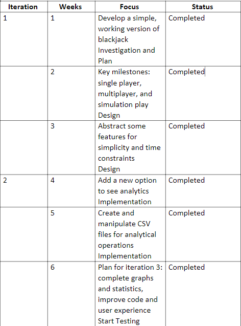
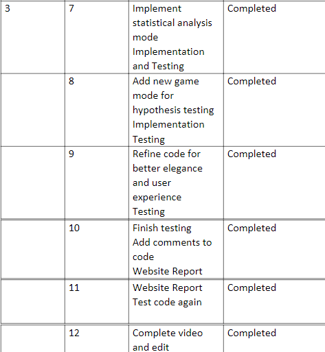
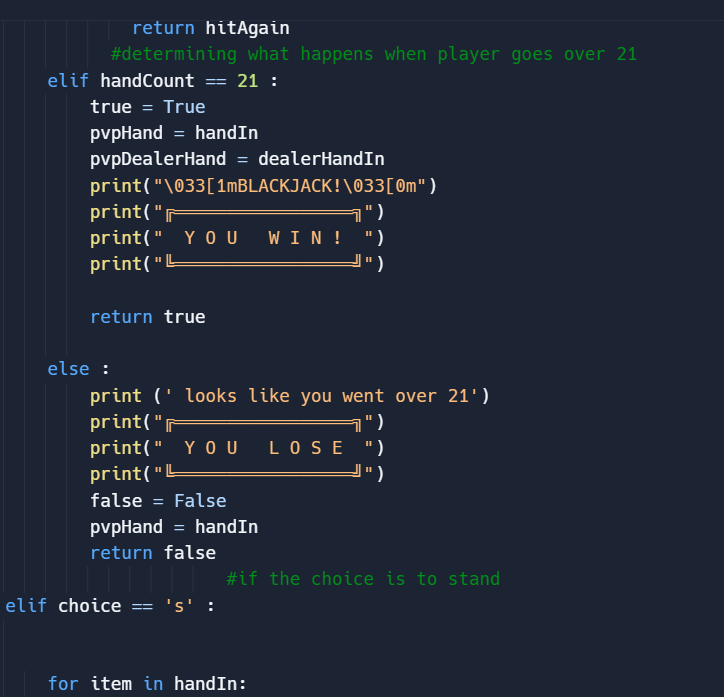
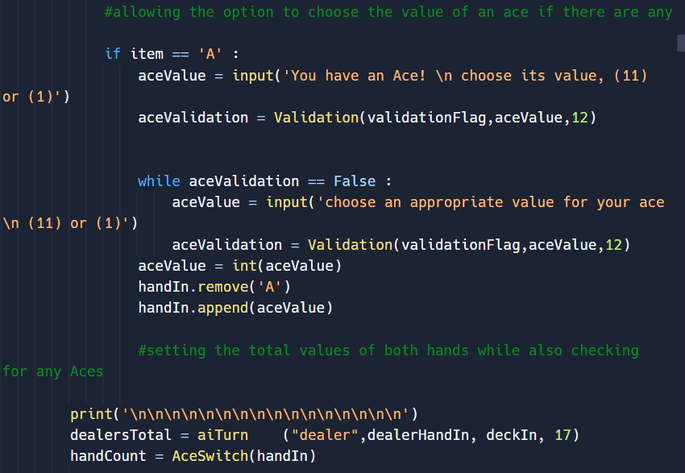
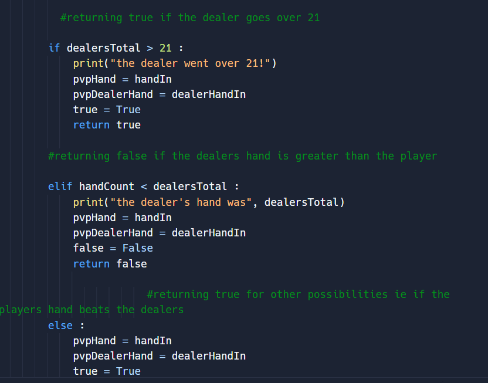
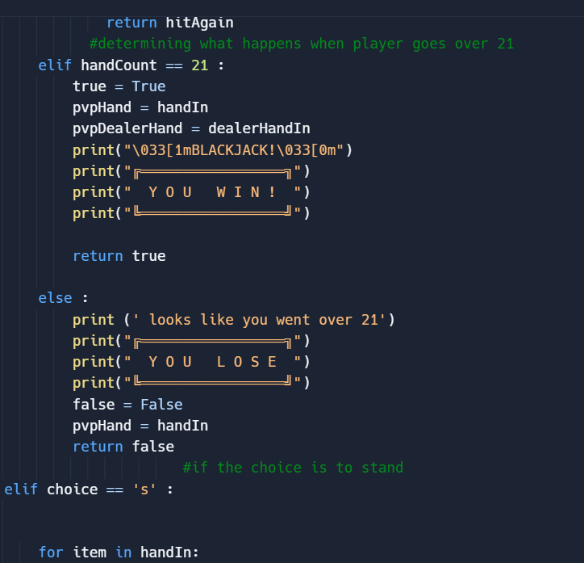
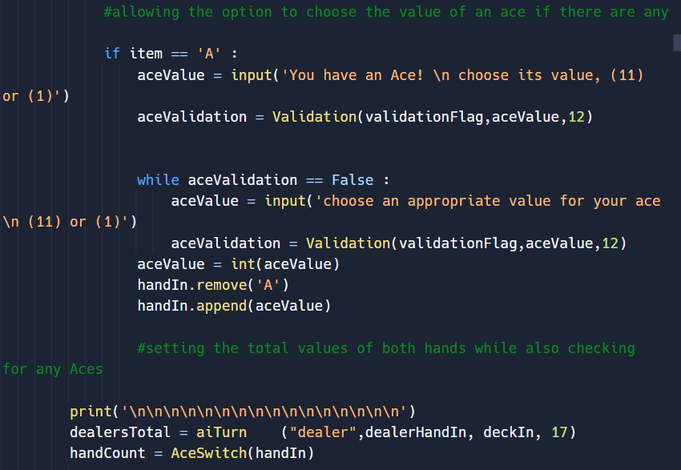
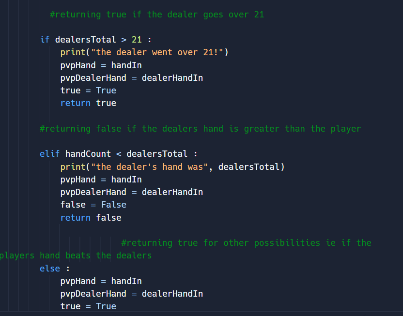

Implementation
Iteration Objectives:

Description of how system was implemented:


Description of each iteration
Iteration 1
Focused on creating a basic, working version of blackjack, covering singleplayer, multiplayer, and simulation play. Due to some challenges encountered during development, certain aspects of the game were abstracted away for simplicity. For example, the individual suits were not included in order to streamline the mathematical aspects of the game.
Iteration 2
The focus shifted to analytics. A new option was added to the program, allowing users to view statistical data. To enable this feature, various libraries were imported and three CSV files were created to store game data. The program was designed to add data to these files and retrieve it for analysis.
Iteration 3
A new game mode was added for hypothesis testing, which allows users to create their own hypotheses and compare them to the results of the regular simulation. Additionally, statistical analysis was completed and graphs were added to provide users with visual representation of the data. Minor improvements were made to the code for better user experience and aesthetics.
Essential parts of my project:

 


HitStand is a crucial function used in various game modes in which the user plays.
Its main purpose is to control what action should be taken if the user chooses to hit or stand in the game.
It first checks for any aces and prompts the user to choose a value for it, which is validated.
If the user chooses to hit, HitStand function adds a card to the user's hand from a randomly shuffled deck.
The function can be run recursively while the user's hand total is below 21.
If the user chooses to stand, the dealer's turn algorithms run based on the game's rules.
Based on the dealer's hand and the user's hand, the HitStand function returns a Boolean value indicating whether the user won or lost the game.



HitStand is a crucial function used in various game modes in which the user plays.
Its main purpose is to control what action should be taken if the user chooses to hit or stand in the game.
It first checks for any aces and prompts the user to choose a value for it, which is validated.
If the user chooses to hit, HitStand function adds a card to the user's hand from a randomly shuffled deck.
The function can be run recursively while the user's hand total is below 21.
If the user chooses to stand, the dealer's turn algorithms run based on the game's rules.
Based on the dealer's hand and the user's hand, the HitStand function returns a Boolean value indicating whether the user won or lost the game.
Problems I encountered:
 After completing iteration one, I realized that it would be challenging to conduct statistical analysis on the multiplayer mode since the winner is chosen in a different function from the one that controls the gameplay and data collection. As a result, I could only analyze the bank data, which would not provide a comprehensive picture of the game's performance. To make matters worse, creating new functions for graphs and other analytical tools would require significant additional work, and it would be impossible to compare the results with those of the other modes.
However, I found a solution by using global variables, which can be named outside any function and used in all functions. This allowed me to collect and store the same data for the winner in the multiplayer mode as in the other modes. Consequently, I was able to conduct statistical analysis on all modes of the game and generate useful insights that could be compared across all modes.
« Previous
After completing iteration one, I realized that it would be challenging to conduct statistical analysis on the multiplayer mode since the winner is chosen in a different function from the one that controls the gameplay and data collection. As a result, I could only analyze the bank data, which would not provide a comprehensive picture of the game's performance. To make matters worse, creating new functions for graphs and other analytical tools would require significant additional work, and it would be impossible to compare the results with those of the other modes.
However, I found a solution by using global variables, which can be named outside any function and used in all functions. This allowed me to collect and store the same data for the winner in the multiplayer mode as in the other modes. Consequently, I was able to conduct statistical analysis on all modes of the game and generate useful insights that could be compared across all modes.
« Previous